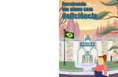

Acompanhe, a seguir, o relato de Elizabet Dias de Sá, educadora cega. Suas palavras exemplificam as afirmações anteriores e servem para refletir: será que encontramos ainda hoje situações semelhantes?
Este relato encerra a parte referente à Integração. Na sequência, você conhecerá mais sobre o conceito de vida independente, cujas raízes vêm do aumento da participação na vida social: quanto mais as pessoas participam, mais querem exercitar esse direito, ter voz, decidir por si mesmas.
